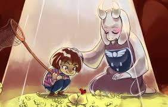
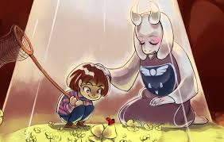
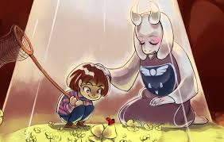
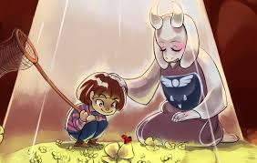

Undertale
My Favorite Game
.gif) 



Undertale is a role-playing video game created by indie developer Toby Fox. The player controls a child who has fallen into the Underground: a large, secluded region under the surface of the Earth, separated by a magic barrier. The player meets various monsters during the journey back to the surface.
The player meets various monsters during the journey back to the surface. Some monsters might engage the player in a fight. The combat system involves the player navigating through mini-bullet hell attacks by the opponent. They can opt to pacify or subdue monsters in order to spare them instead of killing them. These choices affect the game, with the dialogue, characters, and story changing based on outcomes. Outside of some artwork, Fox developed the entirety of the game by himself, including the script and music. The game took inspiration from several sources, including the Brandish, Mario & Luigi, and Mother role-playing series, bullet hell shooter series Touhou Project, role-playing game Moon: Remix RPG Adventure, and British comedy show Mr. Bean. Originally, Undertale was meant to be two hours in length and was set to be released in mid-2014. However, development was delayed over the next three years. The game was released for Microsoft Windows and OS X in September 2015. It was also ported to Linux in July 2016, PlayStation 4 and PlayStation Vita in August 2017, and the Nintendo Switch in September 2018. The game was acclaimed for its thematic material, intuitive combat system, musical score, originality, story, dialogue, and characters. The game sold over one million copies and was nominated for multiple accolades and awards. Several gaming publications and conventions listed Undertale as game of the year. The first chapter of a related game, Deltarune, was released in October 2018